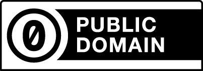
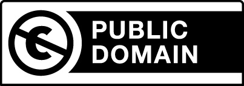
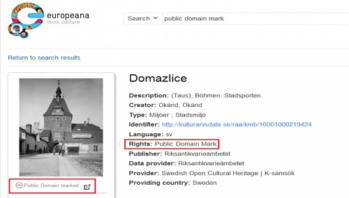

豐富我們的公眾領域：工具與政策的雙重推行！

◎ 本文原載台灣創用CC 計畫，原文章連結按此。
牛頓曾說過一句話：If I have seen farther than others, it is because I was standing on the shoulders of giants.
站在巨人的肩膀上，我們能夠看的更加遼闊，而巨人即是所有前人所累積下來的智慧結晶，以前人的技術、知識作為基礎，我們發掘探索了更多這個世界的奇妙，也生產出許多精妙絕倫的事物，使的時代不斷的進步，同樣的，以「創作」而言，不論甚麼樣的方式，都需要有靈感的啟發，而靈感的來源可能來自一個記憶、一段話、一本書、一幅畫等等，這些或多或少都會運用並奠基於前人的作品，然而，此時在鼓勵自由飛翔的創作和保護既存作品的著作權彼此之間便會產生有所衝突的拉鋸戰。
我國著作權法第一條規定：「為保障著作人著作權益，調和社會公共利益，促進國家文化發展，特制定本法。」由此可知，著作權法除了為保護著作人的著作權外，也應該兼顧社會公益，使大眾有一定對於他人著作接近利用的空間，換言之，應兼衡利用人的權益，而非一味的以保護著作權人為本位，因創作，本是一件在相互激盪之間方能迸出更強烈火花之事，如此方能確實促進文化的持續發展。而在著作權法的運行之下，受著作權保護的創作，若需利用皆需取得著作權人的授權，但各國著作權法亦多會規定，於著作權保護期間屆滿後，該著作即會進入公眾領域 (Public domain) 的範疇，使的大眾可以盡情的、不受任何限制的使用該等著作，然而，在著作權法的歷史演變上，可以看到我們不斷的擴張著作權的保護期間，不斷擴張的結果將導致各類的作品越發難以進入公眾領域內，使的創作一事備受阻礙，此外，因著作權保護期間相當長，一般大眾亦無法輕易判斷一個著作是否已屬於公眾領域而得以自由利用，亦可能造成大眾為免有侵權風險而不敢使用，也會使創作的路上更是崎嶇難行。
據此，我們可以知道公眾領域這一個區域非常重要，它是一塊滿載各種可自由使用素材使創意無限的地方，因此，到底哪些作品或材料是屬於這一區域也就有明確界定清楚的必要性，更應該完善建立完整的公眾領域架構，對於這部分，我們應該以可行的工具和政策方式來建構並豐富這個屬於全人類資產的地方。
首先，針對工具的部分，創用CC 目前對此提供兩種工具可以幫助界定公眾領域的內的作品減輕大眾侵權的風險。第一種是 CC0 （或稱「公眾領域貢獻宣告」），此一工具是針對尚在著作權保護期間的著作，而著作權人主動欲拋棄著作權所給予的所有保護，希望將自己的作品置入公眾領域供大眾自由且無任何障礙運用時所可以使用的一種工具，使的大眾的利用不會受到各國著作權法或是資料庫法的拘束。而此一工具的實際運用案例中，BioMed Central (BMC) 是一個已開放進用為其理念的獨立線上出版社，現在亦採用要求他們的文章數據以 CC0 的標誌放置於公眾領域區域內的政策 ；Europeana 則帶領了推動世界性的數位文化遺產 (digital cultural heritage)，其模式被美國數位公共圖書館所採用，且其組織亦成為開放進用的領導者，於 2012 年時，Europeana對於開放進用此一運動更是釋出了兩千萬筆的元數據 (metadata) 以 CC0（公眾領域貢獻宣告）的方式使之進入公眾領域供大眾自由使用之。

第二種工具則是公眾領域標章 (Public Domain Mark)，所謂的公眾領域標章是針對已經罹於著作權保護時效的作品，為幫助明確標示其已屬於公眾領域所發展出的一種工具。此一方式使的那些不再受到保護的作品能以簡易的方式標明，以便大眾能夠輕易辨識出。

而對此一標章的運用，Europeana 給了我們一個非常好的例示，先前提到他們使用 CC0 在文化著作的元數據上，同時，他們也運用了公眾領域標章來標示出在他們的數位收藏中因為著作權保護期間已明顯屆至而屬於公眾領域的作品。以這樣的方式，能夠有效幫助利用人過濾出哪類的作品因不再受著作權的限制而能為自由的使用。

再者，除了有了可以運用的工具外，同時也應該有適當的政策推行方能達到好的效果。當前，有一個國際性的協會— "Communia" 致力於公眾領域的部分，他們的衷旨在於「促進、強化並豐富公眾領域」。Communia 協會制定出一份公眾領域宣言，並且提出了 14 項政策上的建議，他們認為應該透過公共政策上的改變以及社會運動來支持公眾領域，而其所提出的建議內容則包括了全面減低著作權保護期間、運用易於辨別公眾領域作品的方法以及強調認為公眾領域作品的數位重製品亦應屬於公眾領域的範疇等等 ，對於該等建議亦值得我國參考之。此外，有關於公部門訊息 (PSI) 的部分，於最近在歐盟的協商會議中，創用CC 提出建議認為不應該附加任何條件於公部門訊息的再利用上面，而最好的方式即是直接將公部門訊息置入於公眾領域內，創用CC 並指出可藉由修改各國國內得著作權法使之排除於著作權法規範之外而不受著作權之保護，至於若修改著作權法有困難者，則可運用前述所提及之公眾領域貢獻宣告 (CC0) 此一工具，將置放於公眾領域內以確保無限制的再利用行為 。
在美國也可以觀察到其政府對於公眾領域的重視，美國聯邦機構決定了將如何來支持總統對於使大眾進用聯邦政府資助所獲得的研究成果和數據資料的行政指令，而白宮本身也指出了應該如何來實踐有關開放資料的行政指令。事實上，任何使用政府金錢所產生的資料應該要明確的標示為公眾領域的內容較適當。
對於公眾領域的政策應該要有所改變，以更積極的方式來推動我國一同建構此一領域，而上述目前其他國家或國際性組織的建議及政策等即為我國可參考並思考是否引入或推行的方向。
公眾領域並非單一個人、團體甚至一個國家的責任而已，此一領域屬於全球人類所共享，任何人都有運用其領域內素材的機會、情況和需求，我們應該共同致力於協助建構並豐富它的內容。除了運用各種工具來擴增公眾領域的內容，也需要有政策改變以及著作權改革的加入，方能真真正正建立出有豐富內容的公眾領域。 [註]
[註] 參考資料：
BioMed Central moves to CC BY 4.0 along with CC0 for data.
Europeana celebrates 5 years and 30 million.